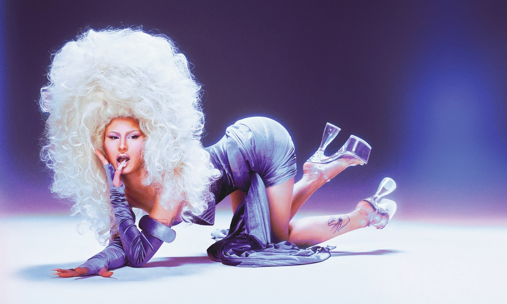

El destino de Faraonika parecía estar escrito en las estrellas cuando una noche de 2017 se encontró en la puerta de Club Regia a la artista performática trans Bianca Bárbara LaVogue. A sus 20 años, Sara Belazaras tenía algunas canciones publicadas bajo su propio nombre y muchas otras guardadas, pero todavía estaba lejos de tomarse la música en serio. “Ella me dio un empujoncito que necesitaba. Me dijo ‘no te guardes las cosas, mañana te podés morir, vos tenés que mostrar’”.
Sus primeras canciones, a modo de juego, las subía en Soundcloud, y lo que superaba ciertos filtros propios iba a YouTube. “Si vos no publicás tus cosas, mañana nadie va a saber lo brillante que sos”, le dijo Bárbara Bianca LaVogue, artista trans, clubber, mostra fashion en el bar de Regia una noche casi sin conocerla. “Dijo eso y se fue”, explica Fara. Entonces decidió dedicarle el primer tema oficial que aparece en su YouTube, “Faraonika”, pero la artista no llegó a verlo porque murió antes. A partir de esta canción le empezaron a decir Faraonika y su proyecto adoptó este nombre artístico. Pero ella remarca que Faraonika era Bianca.